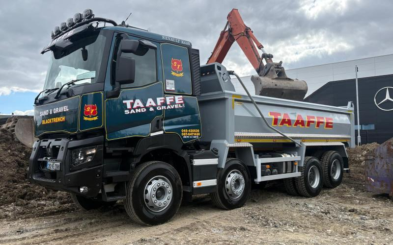

Site clearance specialists,
near Naas
Taaffe Sand & Gravel are site-clearance specialists based near Naas, Co Kildare, providing a full site clearance service to most of the surrounding counties. Using our own digger and bulldozer machinery, which can be brought to your site, we assist with soil stripping, reduced-level digging, earth removal and basic excavation. All removed material will be disposed of responsibly.

Soil stripping
Topsoil and vegetation stripped off and stockpiled or carted away.
Reduced-level digging
Dug down to formation level, ready for foundations and rising walls.
Earth removal
Spoil removed from building sites and development projects after earthworks.
Basic excavation
Foundations, service runs, soakaways and entrances.
Clear away waste material
All waste material cleared and disposed of responsibly.
Prepare the surface
Levelled and stoned up so the site is ready for future development.
Artic muck away
Bigger volumes taken away by artic, approx. 29–30 tonne a load.
Waste collection permit NWCPO-14-11840-03. Transfer dockets supplied.
Site to clear?
Tell us the access and what is coming off it.